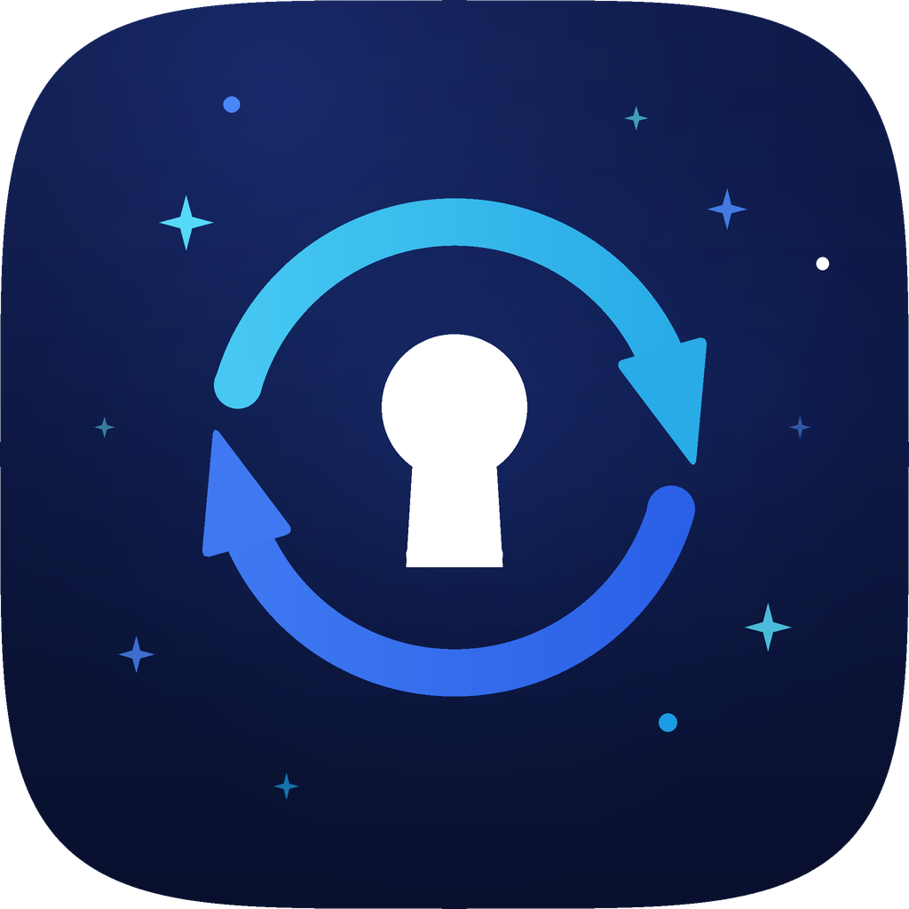
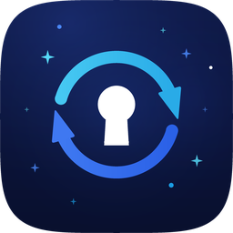
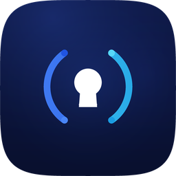

量子密备 · 双轨改单向箭头
两段弧改成顺时针单向前进箭头，读起来就是「同步 / 备份在跑」；四周加了 4 角星和小圆点做星空点缀，颜色按远近做了深浅，不抢主体。

推荐：无腰封版
顺时针双箭头绕一圈，中间白色钥匙孔点题「密」。星点大小和亮度都做了层次：近处的亮青、远处的暗蓝，缩到 32px 会自然退成背景噪点，不会糊住主体。
无腰封 · 主推

星空双箭头
图形铺满画面，飞牛外框显示名称。
64
48
32
20
有腰封 · 备选
星空双箭头 + 密备
带名称，单独截图也认得出是什么。
64
48
32
20
上一版 · 对照

原来的双轨
无箭头、无星点，方向感弱一些。
64
48
32
20
浅色桌面下
要是觉得星点太多，我可以减到 4 颗只留四个角；要是想让同步感更强，还能把箭头再加长一点、或者两段弧错开做「接力」效果。